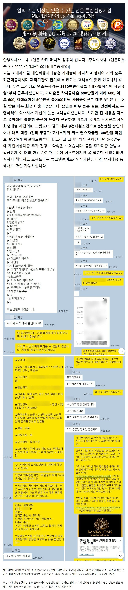
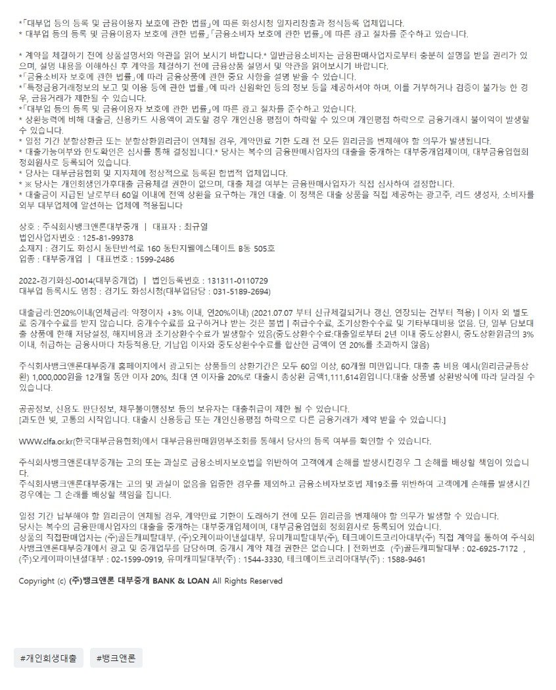

[개인회생대출] 골든, 안전 기부결 / 기대출 4건 2300만 사용중에 유미캐피탈(대부) 2천만 승인사례!! (대부 3건 대출을 한건으로 통합 및 생활자금마련에 성공.)

상담신청 -> https://cafe.naver.com/cityman88/29497
뱅크앤론의 개인회생대출이 좋은이유 https://youtu.be/oYRa4K_O_-0
https://cafe.naver.com/cityman88/309876
원본 백업에 없거나 외부 접근이 제한된 이미지입니다.
[필독사례모음] 개인회생자대출 필독 매니저 사례 모음 (개인회생자대출 알아보시는분들 필독필독!!)
[개인회생자대출] 회생면책자 1700만 13.8% 승인사례 (기대출과다, 대부사용중인 4대가입 직장인 회생면책자) https://cafe.naver.com/cityman88/...

https://cafe.naver.com/cityman88/309927